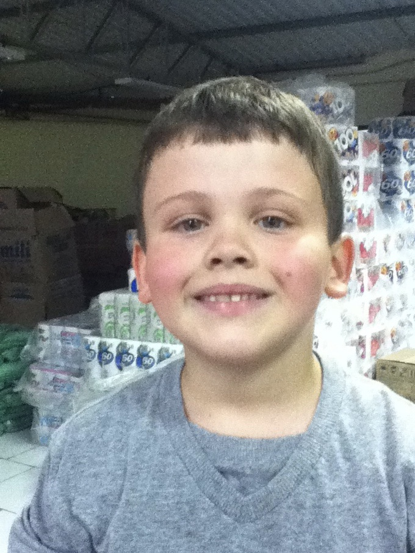

Bruno Enrico Eid Alcântara
During his time at school, Bruno had little interest in studying at home and focused primarily on doing the minimum required to pass his exams.
He decided to pursue design after attempting to create a logo for his parents’ business using his phone and a drawing application.

He now works from home, developing his skills and building a professional path in design.